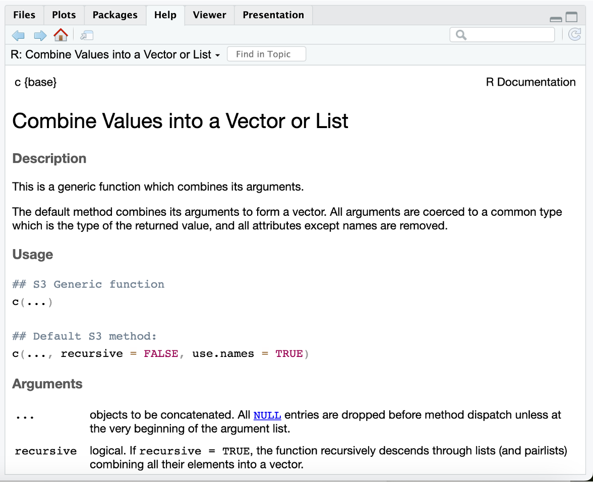

{kind=link}
5 + 7[1] 12Horacio Lopez-Nicora
January 26, 2024
Last week, we did a little more basic interaction with R (missing prompts and data types), we wrote code in R scripts (and added comments to our code), and used and named R objects.
Here are some additional tips from our previous session: Go to Tools and then Keyboard Shortcuts Help. Identify useful keyboard shortcuts and use them during today’s session.
Built-in Functions
Vectors in R
Getting Help with R
Functions are the foundation of almost everything in R. In programming, they are sets of organized instructions designed to perform specific tasks. The purpose of functions is to create self-contained programs that can be called upon as needed.
What exactly is a function? Let’s recall from our math knowledge:
A function in R is a collection of statements that can be reused in a program. This is the syntax of defining a function in R:
During our first session of Code Club, we examined the setwd function.
Built-in functions, which are already created or defined in the programming framework, are referred to as built-in functions. R offers a comprehensive collection of functions that can effectively handle almost any task for the user. These built-in functions are categorized based on their functionality as follows.
Please refer to:
A numeric function in R is defined as a function that can accept either a set of numeric values or a numeric vector (see below) as an input argument to carry out specific tasks. Here are several frequently used numeric functions in R programming.
| Function | Description |
| abs(x) | absolute value |
| sqrt(x) | square root |
| ceiling(x) | ceiling(3.475) is 4 |
| floor(x) | floor(3.475) is 3 |
| trunc(x) | trunc(5.99) is 5 |
| round(x , digits= n) | round(3.475, digits=2) is 3.48 |
| signif(x , digits= n) | signif(3.475, digits=2) is 3.5 |
| cos(x), sin(x), tan(x) | also asin(x), acos(x), cosh(x), acosh(x), etc. |
| log(x) | natural logarithm |
| log10(x) | common logarithm |
| exp(x) | e^x |
A) Let’s explore one function in particular: sum
Last week we used R as a calculator. Add 5 and 7 the way we did last week and then try using the built-in function sum.
Using R as a calculator to add 5 and 7:
Using the sum built-in function in R, add 5 and 7:
B) Now, let’s combine functions by adding 3, 7, 9, and 11. After that, we will multiply the sum by 3. Lastly, we will calculate the square root of this result and round it to the nearest whole number.
C) Below is a very common example in my data analysis.
arc-sine square root. You have gathered disease severity data from three plots: 0.75 (control), 0.70 (Trt 1), and 0.30 (Trt 2). Apply the transformation mentioned above to your data for analysis. (Click for the answer)
The table below provides descriptions of functions pertaining to probability distributions.
| Function | Description |
| dnorm(x) | normal density function (by default m=0 sd=1) |
| pnorm(q) | cumulative normal probability for q (area under the normal curve to the left of q) pnorm(1.96) is 0.975 |
| qnorm(p) | normal quantile. value at the p percentile of normal distribution qnorm(.9) is 1.28 # 90th percentile |
| rnorm(n, m=0, sd=1) | n random normal deviates with mean m and standard deviation sd. |
Let’s generate 10 random normal variates with mean=50, sd=10.
[1] 49 56 46 52 67 51 64 27 48 47Now let’s do the same thing, but call it y .
To ensure reproducibility of pseudo-random numbers for the random number generators listed, you can utilize set.seed(1234) or any other integer.
Other useful statistical functions are provided in the following table.
| Function | Description |
| seq(from , to , by) | generate a sequence indices <- seq(1,10,2) #indices is c(1, 3, 5, 7, 9) |
| rep(x , ntimes) | repeat x n times y <- rep(1:3, 2) # y is c(1, 2, 3, 1, 2, 3) |
Each has the option na.rm to strip missing values before calculations. Otherwise the presence of missing values will lead to a missing result.
| mean(x , trim=0, na.rm= FALSE ) |
mean of object x |
| sd(x) | standard deviation of object(x). |
| median(x) | median |
| range(x) | range |
| sum(x) | sum |
| min(x) | minimum |
| max(x) | maximum |
Object can be a numeric vector or data frame.
A) Let’s explore the following functions together using the group of numbers: 5, 7, 3, and 9 (in this order). These functions include: sum, min, max, and range
B) Let’s now get the average, standard deviation, and sort these numbers using mean, sd, and sort.
Depending on the type of data that one needs to store in R, different data structures can be used. The four most commonly used data structures in R are vectors, lists, matrices, and data frames. In this session, we will only be working with vectors.
The fundamental data structure in R is vectors, which are 1-dimensional data structures that can only contain one type of data (e.g., all entries must have the same mode). To create a vector in R, the function c() (concatenate or combine) is used, as shown below.
Let’s create a vector named “my_vector” with 5 entries.
The output generated on the previous code chunk displays the entries in your vector, with the 1 in squared brackets indicating the position of the entry to its right in the vector. In this case, 10 is the first entry of the vector.
If, for any reason, we only wish to extract the value 50 from this vector, we can utilize our knowledge of it being in the third position to do so.
Since a vector can only contain one data type, all its members need to be of the same type. If you attempt to combine data of different types into a vector, R will not provide a warning, but rather coerce it to the most flexible type. (The order of flexibility, from least to most, is: logical, integer, double, character). Therefore, if you add a number to a logical vector, the entire vector will be converted to a numeric vector.
To check what data type an object is, run the R built-in function class(), with the object as the only parameter.
If you for any reason want to have more information about any object you have stored in your R session the command str() is very helpful.
A) Let’s revisit mean, sd, sort, and other basic R operators.
B) Add 7 to the my_vector, multiply 3 by my_vector, and check which values are greater than 25.
C) Please create another_vector and add it to my_vector. Next, use the sum function to combine these vectors.
Before seeking assistance from others, it is generally advisable for you to attempt to resolve the problem on your own. R provides comprehensive tools for accessing documentation and searching for help.
help() and ?The help() function and ? help operator in R offer access to documentation pages for R functions, data sets, and other objects. They provide access to both packages in the standard R distribution and contributed packages.
A) Can you obtain information about the type of R object that mean() and sum() functions take by using the help() or ? functions?
